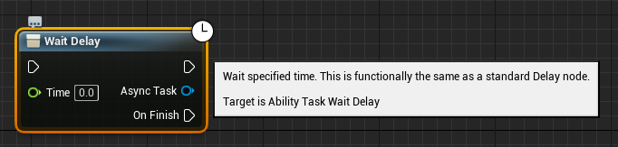
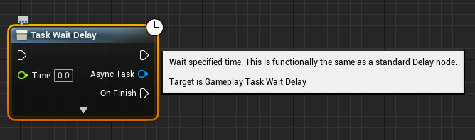

这次是UE4的学习，要学习如何在UE4中制作动作游戏，在UE4官方放出来的案例中Action RPG这个案例里面包含了大量有用的知识点，这篇文章就是就这个案例进行学习整理。
这里涉及到一个相当大的概念，GamePlay，这个应该是UE4模式的游戏架构，理解的话需要花费很多精力，大量的名词我都闻所未闻，只能一点点的啃了。
GamePlay Guide
这是官网的标题，暂时我不会整理，先从别的部分一点点入手
UE4官网的文章都是有中文的，但是还是放着吧，机翻翻译的我不知所云。
Gameplay Ability System
官网上对于GAS的介绍，也是这篇文章要搞明白的部分。
ActionRPG
这里我要逐步理解GAS的组成，剖析这个项目的源码。
ActionRPG内容分析
ActionRPG练习
这一部分的内容是针对ActionRPG源码的练习，同时也是在公司练手的时候的练习。旨在熟悉GAS的使用。
下一章节的GameplayAbilities and you中是对PlayerInput和Ability进行了绑定，而大多数情况我觉得用到的可能性很小。但是作为熟悉GAS的使用是足够了。下一步是对使用GameplayAbility作为事件的Trigger进行介绍。
GameplayAbilities and you
这是一篇本应在UnrealEngineforums上的文章，但是不知道为什么页面被关闭了，但是我找到了GitHub上有人转载了
这是一篇相当晦涩难懂的文章，当然也包含了全是英文这个原因，但是也总好于上面的ActionRPG只有一个工程，其他的啥也没有的要好。
Introduction
关于GameplayAbility(一下简称GA)，在这篇文章或者官网中有介绍，或者上面的部分有提到这里不再赘述。
Getting Started
所以让我直接开始正题，如何一步一步按照文章的步骤来初步理解GA的。
Setting up the Project
第一步是建立我们的项目，首先我是使用的UE4.25版本，创建了一个完全空白的项目。这里文章中要求的是让我们导入C++ Third persion，就是那个第三人称的控制器。而在这里我遇见了一个挑战。
如何导入第三人称控制器。由于我创建的是初始的空白项目。
ContentBrows -> Add New -> Add Feature or Content Pack to the Project -> C++ Feature -> Third Person
就这样导入项目了，但是下一个问题又来了，导入项目的ThirdPerson编译错误。
绕了一大圈，最终发现是在项目源码的Build.cs中缺少了HeadMountedDisplay这个Module。至于为什么会缺少这个module的原因我猜测是
- BlankProject确实是没有这个Module的
- 在我禁用SteamVRPlugin的时候自动给我删除掉了
当然我还是觉得第一种可能性是比较大的，而我也没想到这个第三人称的控制器需要用到VR相关的Module。最后的调整，编译无错的版本是这样的：1
PublicDependencyModuleNames.AddRange(new string[] { "Core", "CoreUObject", "Engine", "InputCore", "HeadMountedDisplay" });
创建第一个GamePlayAbility blueprint
这个就是创建一个GA蓝图，继承GameplayAbility蓝图类，这一步超级简单，然后打开创建的蓝图，会看到ActivateAbility的节点，在后面添加一个print节点，打印HelloWorld。
Setting up our Charactor
哦对，在我们建立项目之后应该启用GameplayAbilityPlugin，以便于我们在项目中引用它。
在我们的Build.cs中添加GameplayAbility的Module，最终的感觉像这样：1
PublicDependencyModuleNames.AddRange(new string[] { "Core", "CoreUObject", "Engine", "InputCore", "HeadMountedDisplay", "GameplayAbilities" });
找到第三人称控制器的源码，我们将在源码中添加一些修饰。我自己的项目则是TP_ThirdPersonCharacter.h文件。
首先我们要为Charactor添加AbilitySystemComponent组件，在别的地方应该也有提到，这个组件是Actor必须的，非常关键的，对于GameplayAbilitySystem来说。
1 | /** Camera boom positioning the camera behind the character */ |
因为我添加的代码跟文章中的差不多，所以直接复制粘贴了。
这之后，也是非常重要的，我们需要继承IAbilitySystemInterface接口并实现里面的方法。
This interface here gives other actors an easy way to both know we have an ability system, and a way to get it without doing something dumb and inefficient like iterating through our components for an ability system.
AbilitySystem貌似就是通过这个接口来确定Actor的AbilitySystem能否正常工作。实现的效果像这样：1
2
3
4
5
UCLASS(config=Game) class AGameplayAbilitiesTutCharacter : public ACharacter, public IAbilitySystemInterface //We add this parent.继承接口
UAbilitySystemComponent* GetAbilitySystemComponent() const override //We add this function, overriding it from IAbilitySystemInterface. 接口的方法实现
{ return AbilitySystem; };
之后我们需要对AbilitySystemComponnent进行创建，在头文件中只是声明了一下。实现的就像这样：1
2
3
4
5
6
7
8
9
10
11
12
13
14
15
16
17
18
19
20
21
// 省略了与文章无关的头文件
//////////////////////////////////////////////////////////////////////////
// ATP_ThirdPersonCharacter
ATP_ThirdPersonCharacter::ATP_ThirdPersonCharacter()
{
// ......
// 省略一些源码
// Create a follow camera
FollowCamera = CreateDefaultSubobject<UCameraComponent>(TEXT("FollowCamera"));
FollowCamera->SetupAttachment(CameraBoom, USpringArmComponent::SocketName); // Attach the camera to the end of the boom and let the boom adjust to match the controller orientation
FollowCamera->bUsePawnControlRotation = false; // Camera does not rotate relative to arm
// Our ability system component 创建组件
AbilitySystem = CreateDefaultSubobject<UAbilitySystemComponent>(TEXT("AbilitySystem"));
// Note: The skeletal mesh and anim blueprint references on the Mesh component (inherited from Character)
// are set in the derived blueprint asset named MyCharacter (to avoid direct content references in C++)
}
Once you have compiled, you can open your character blueprint(which inherits from your C++ character) and lo and behold, right under the character’s movement component you should see an AbilitySystemComponent.
就像上面说的那样，当你编译之后就能在Map中的第三人称控制器的蓝图中找到我们创建的AbilitySystemComponent组件。
So far so good.
但是目前为止，我们还有很长的路。现在我们什么都没实现。
That’s because the ability system doesn’t have any abilities to activate yet, nor does it have any inputs assigned to them, anyway, so trying to activate an ability you do not have is, obviously, a quite useless effort. We will work on fixing both things. You must do both things in C++.
上面这句话有两个：
- 需要一个ability去激活ability system
- 需要绑定输入(inputs)到它们身上
Binding to Character input
首先，我们需要将我们的AbilitySystem绑定到Character’s input。我们想把我们的abilitysystem绑定到UInputComponent上。
We want to call AbilitySystem->BindAbilityActivationToInputComponent within the SetupPlayerInputComponent. It takes two parameters: The UInputComponent pointer at hand and a struct called FGameplayAbiliyInputBinds. This is not a typo! It is not called FGameplayAbilityInputBinds, but FGameplayAbiliyInputBinds!
所以说FGameplayAbiliyInputBinds是什么？注意这里我还真拼错了一次。
The constructor for FGameplayAbiliyInputBinds takes at least 3 parameters: The first two are strings, and represent the input names that will be used to define “Confirm” and “Cancel”-input commands. You do not necessarily need these depending on your game, but abilities can be set up to listen to these while they’re active, and targeting actors (basically, actors that return an ability viable targets/locations to aim at for an ability, if an ability requests one) will use these too, so generally it can’t hurt to have these even if you will never use them. The third parameter is the name of an arbitrary UEnum of all things. This is one of the witchcraft-ier aspects of the system: The ability system component will look into the enum whose name you’ve given and will map its ability slots to the names of the elements contained within the enum.
顾名思义，应该就是负责存储对应Ability和键位映射的结构数据或者中间数据，FGameplayAbiliyInputBinds的构造函数至少有三个参数，前两个参数是字符串，代表着定义”Confirm”和”Cancel”两个输入命令(input commands)的输入名字。根据游戏的需要可能这并不是必须的。
这里我没怎么明白这前两个参数的具体意思，文章中说的abilities can be set up to listen to these while they’re active, and targeting actors (basically, actors that return an ability viable targets/locations to aim at for an ability, if an ability requests one) will use these too这里我也不是非常清楚，谁是谁，说的是谁我都不知道。
第三个参数是一个自定义的UENUM枚举，他说这里是这个GAS的神奇的地方，而我只觉得想骂人。
AbilitySystemComponent会取出自定义的枚举类型的名字，然后映射他的ability slots到这个枚举类型中所包含的名字上。下面是这个自定义枚举的举例实现：1
2
3
4
5
6
7
8
9
10
11
12
13
14//Example for an enum the FGameplayAbiliyInputBinds may use to map input to ability slots.
//It's very important that this enum is UENUM, because the code will look for UENUM by the given name and crash if the UENUM can't be found. BlueprintType is there so we can use these in blueprints, too. Just in case. Can be neat to define ability packages.
UENUM(BlueprintType) enum class AbilityInput : uint8
{
UseAbility1 UMETA(DisplayName = "Use Spell 1"), //This maps the first ability(input ID should be 0 in int) to the action mapping(which you define in the project settings) by the name of "UseAbility1". "Use Spell 1" is the blueprint name of the element.
UseAbility2 UMETA(DisplayName = "Use Spell 2"), //Maps ability 2(input ID 1) to action mapping UseAbility2. "Use Spell 2" is mostly used for when the enum is a blueprint variable.
UseAbility3 UMETA(DisplayName = "Use Spell 3"),
UseAbility4 UMETA(DisplayName = "Use Spell 4"),
WeaponAbility UMETA(DisplayName = "Use Weapon"), //This finally maps the fifth ability(here designated to be your weaponability, or auto-attack, or whatever) to action mapping "WeaponAbility".
//You may also do something like define an enum element name that is not actually mapped to an input, for example if you have a passive ability that isn't supposed to have an input. This isn't usually necessary though as you usually grant abilities via input ID,
//which can be negative while enums cannot. In fact, a constant called "INDEX_NONE" exists for the exact purpose of rendering an input as unavailable, and it's simply defined as -1.
//Because abilities are granted by input ID, which is an int, you may use enum elements to describe the ID anyway however, because enums are fancily dressed up ints.
};
我直接复制粘贴了。将上面的Enum实现放到头文件，然后回到cpp文件中对键位进行绑定。
回到Cpp文件中的SetupPlayerInputComponent函数中,用户输入键位进行绑定。1
AbilitySystem->BindAbilityActivationToInputComponent(PlayerInputComponent, FGameplayAbiliyInputBinds("ConfirmInput", "CancelInput", "AbilityInput"));
所以到这一步为止，如果编译没有出错误的话，我们已经成功的将ability system’s sbility activation()绑定到了用户输入(player input)上。
Giving the Character an Ability
最后一步是给我们的AbilitySystem一个Ability，就如已经预备好的一样，我们要将这个Ability放到已经映射到PlayerInput的第一个ability slot上。
这里使用了蓝图的一个类似Unity的Inspector中拖拽搞定Reference的功能，我之前也有实现过，只不过拖拽是不支持的，可以在下拉菜单中选择自己定义好的蓝图而已，而这里则是选择我们一开始创建的那个GameplayAbility蓝图。
1 | UPROPERTY(EditAnywhere, BlueprintReadWrite, Category = Abilities) |
随后我们将在BeginPlay中调用AbilitySystem的GiveAbility函数，看名字就知道是干什么得了。但是需要注意的是我们必须，或者说只能在Server端执行Ability的赋予，这里应该是GAS的要求或者说实现，因为GAS是支持多人通信的系统，就文章所说如果在Client中赋予Ability的话，会崩溃，UE4和你都会崩溃（这是我加的）。
GiveAbility需要一个FGameplayAbilitySpec作为参数，FGameplayAbilitySpec是围绕着GameplayAbility的数据（类型），包含着level和input ID。
GiveAbility requests an FGameplayAbilitySpec as parameters. An FGameplayAbilitySpec is the data surrounding a GameplayAbility, notably which level (the system has built-in support for a level variable, quite good for RPGs/MOBAs as mentioned) and which input ID it is.
- level: 系统已经内置的关卡变量，对RPGs/MOBAs类的游戏非常友好。也就是关卡的标志，或许我以后会经常用到。
- input ID: 这里终于跟上面连起来了，那个自定义的ENUM已经跟我们的AbilitySystem的AbilitySlots进行了绑定，这个Input ID则是可以对AbilitySlot进行指定（这是目前为止自己的理解）
FGameplayAbilitySpec需要一个GameplayAbility对象作为参数，我们可以使用Ability的默认对象（class’s default object），就文章的作者而已：
There is very little reason to use anything other than the default object of a GameplayAbility class as far as I’ve understood it from going through the source.
关于默认对象的描述贴一段来自官网的内容：
The UCLASS Macro
The UCLASS macro gives the UObject a reference to a UCLASS that describes its Unreal-based type. Each UCLASS maintains one Object called the ‘Class Default Object’, or CDO for short. The CDO is essentially a default ‘template’ Object, generated by the class constructor and unmodified thereafter. Both the UCLASS and the CDO can be retrieved for a given Object instance, though they should generally be considered read-only. The UCLASS for an Object instance can be accessed at any time using the GetClass() function.
我们还要调用AbilitySystem->InitAbilityActorInfo函数，来告诉AbilitySystem谁是Owner谁是Avatar。
Finally, while on the topic of BeginPlay, we should also call AbilitySystem->InitAbilityActorInfo. It tells the AbilitySystem what its Owner (the actor responsible for the AbilitySystem) and Avatar (the actor through which the AbilitySystem acts, uses Abilities from etc.) is. In our case our character is both.
- Owner: AbilitySystem的持有Actor
- Avatar:使用这个AbilitySystem的Ability的Actor？这里我不是太明白。
BeginPlay中的实现效果：1
2
3
4
5
6
7
8
9
10
11
12
13
14// .h
virtual void BeginPlay() override;
// .cpp
void ATP_ThirdPersonCharacter::BeginPlay()
{
Super::BeginPlay();
if (AbilitySystem) {
if (HasAuthority() && Ability) {
AbilitySystem->GiveAbility(FGameplayAbilitySpec(Ability.GetDefaultObject(), 1, 0));
}
AbilitySystem->InitAbilityActorInfo(this,this);
}
}
还有需要注意的是，我们必须要保证每当controller改变的时候，AbilitySystemComponent’s ActorInfo struct的内容被更新。这里贴上原作者的话:
You also need to make sure that the AbilitySystemComponent’s ActorInfo struct is being updated each time the controller changes. On the surface much of the system will work without that, but in a multiplayer enviroment especially(where pawns may be spawned before the client controller possesses them) you will experience crashes and behaviour that can be difficult to debug should you not properly set the ActorInfo up.
这里有我不太明白的地方，就下面的源码来看这个Controller指的是哪个Controller我都不知道，这里是知识盲区。实现如下：
1 | // .h |
这里扫一下盲，关于PossessedBy函数的定义：1
2
3
4
5
6// Pawn.h
/**
* Called when this Pawn is possessed. Only called on the server (or in standalone).
* @param NewController The controller possessing this pawn
*/
virtual void PossessedBy(AController* NewController);
以上都编译好了之后，还有两步，一是把我们一开始创建好的GameplayAbility蓝图（输出HelloWorld）指定到我们预备好的AbilitySlot上。
在打开的Map中找到我们使用的第三人称控制器（ThirdPersonCharacter），在它的Details面板使用我们设置的Category-Abilities检索，便会找到我们准备好的AbilitySlot1，在这里我们指定我们制作的打印HelloWorld的GameplayAbility蓝图。
第二步是指定PlayerInput的映射，我们已经把Ability映射到了PlayerInput上了，但是没有指定哪一个Ability到哪一个键位，这个时候回想起那个我们制作的不知道干什么的UENUM枚举类型。
去Edit->Project Settings中找到Input，添加Action Mappings。
添加一个新的Action Mappings，名字指定为”UseAbility1”,这个名字跟你声明的Enum枚举类型里定义的变量名对应，注意是变量名字。然后指定键位，我这里指定的是Enter键。
好了以上就是我跟着做的过程的全部内容，运行游戏，然后按下Enter键，就会发现左上角打印出了HelloWorld！。
虽然只能触发一次。
这里文章还提到如果出现了问题，比如说UE4崩溃，或者AbilityActor is invalid之类的错误的话提供下面的解决方案：
Note that if it crashes and spits out an error message talking about AbilityActorInfo being invalid, try adding this code just before the HasAuthority() check and seeing if it fixes the problem:
1 | FGameplayAbilityActorInfo* ActorInfo = new FGameplayAbilityActorInfo(); |
然后我们枯燥的部分终于告一段落了。
The Essentials (要点)
在解决了漫长的Setup设置之后，是对GAS的各种基础概念进行认知。但是这篇文章从现在开始的部分真的对我来说是晦涩难懂，每一句话太长了，让我陷入了不会英语的自责。。。
我只能一点点的理解。
这个章节是对GAS中的一些要点，关键概念进行总结和理解。
GameplayAbilities
GameplayTasks
GameplayEffects
AttributeSet
这里我先跨过前面的部分直接说AttributeSet。其实我是大概的看完了这个部分，然后又看了下面的文章才更新的这部分的内容的。
这篇文章对AttributeSet的内容讲解的稍微深了些，或者说配合代码讲解，本应是很好理解的，但是我只理解了一半。有时间，或者再加深一些理解之后再来总结这篇文章吧。
GASDocumentation
这是一个完整的关于GameplayAbilitySystem的框架的使用文章，这里面包含了很多的知识，也吃掉了我许多时间，实在是理解GAS的一个非常好非常重要的文章。
由于理解本身就已经非常费时费力，当然更多的是自己的摸鱼和工作不力，但还是希望能好好理解UE4这个框架
GASDocumentation的个人翻译和理解
在这里我准备把这个GitHub的文章的一些重要部分进行翻译和整理，当然不是全部，还有对其中的实现做一些记录。
Intro to the GameplayAbilitySystem Plugin
官网上的说明跳过不说，我自己的理解就是，GAS这个系统是为RPG和MOBA类游戏打造的框架，里面包含了升级啊角色技能冷却啊之类的要素的开箱即用的功能，即包装好的功能。由于在这个框架中实现了许多Multiplay的内容，相较于自己重新构建，学习使用这个框架的成本更低一些，嘛代价就是不能彻底理解UE4的多人游戏网络框架了。
但是有得必有失。由于GAS已经内置于UE4的源码中了，所以直接拿来用就好了。如果有不满的地方，那么之后再考虑如何对其进行扩展。
关于UE4中关于GAS提供的功能，在这篇文章中是这样形容的：
The plugin provides an out-of-the-box solution in single and multiplayer games for:
- Implementing level-based character abilities or skills with optional costs and cooldowns (GameplayAbilities)
- Manipulating numerical Attributes belonging to actors (Attributes)
- Applying status effects to actors (GameplayEffects)
- Applying GameplayTags to actors (GameplayTags)
- Spawning visual or sound effects (GameplayCues)
- Replication of everything mentioned above
在我整理这篇文章的时候已经对这篇文章和这个项目的源码进行了大致的理解和实现，所以对于不知所云的地方会加上一些标注。
GAS提供的一些开箱即用的功能有（包含单人和多人游戏）：
- 基于等级的能力和技能的实现带有一些数值的消耗或者冷却时间，即GameplayAbility
- 操纵Actor的数值属性，即Attribute
- 应用一些“影响”到Actor当前的状态上，即GameplayEffect
- 将GameplayTags应用到Actor上，即一些GameplayTag的使用
- 生成一些特效或音效，即GameplayCue
- 上述提到的内容的状态复制，即Replication
In multiplayer games, GAS provides support for client-side prediction of:
- Ability activation
- Playing animation montages
- Changes to Attributes
- Applying GameplayTags
- Spawning GameplayCues
- Movement via RootMotionSource functions connected to the CharacterMovementComponent.
关于GAS的一些高级特性，就是某种程度上提供了客户端本地预测。
- Ability的激活
- Animation Montage的播放
- Attribute的变动
- 应用GameplayTag
- 生成GameplayCue
- Movement via RootMotionSource functions connected to the CharacterMovementComponent.
最后一个特性是我没有遇见过的也是没有验证过的，也不知道该怎么翻译
Current issues with GAS:
- GameplayEffect latency reconciliation (can’t predict ability cooldowns resulting in players with higher latencies having lower rate of fire for low cooldown abilities compared to players with lower latencies).
- Cannot predict the removal of GameplayEffects. We can however predict adding GameplayEffects with the inverse effects, effectively removing them. This is not always appropriate or feasible and still remains an issue.
- Lack of boilerplate templates, multiplayer examples, and documentation. Hopefully this helps with that!
目前GAS上仍然需要解决的问题是以下几个问题：
- GameplayEffect latency reconciliation, 我也不知道该怎么翻译这个，按照描述时所说就是ability的colldown无法本地预测导致了拥有高延迟的本地玩家相较于低延迟的玩家拥有更低的开火率，这在GameplayEffect章节中会再提及。
- 不能预测GameplayEffect的移除。虽然可以预测性的添加具有相反效果的GE来完成看似删除的效果，但是这不是总是可行的，仍然是一个问题。
- 确实样例模板和文档。（跟GAS相关的文档就少到离谱，而且大多还是英文，而事实上这篇文章帮了我很多很多）
但是最详尽的文档就是UE4的源码了…
Setting Up a Project Using GAS
- Enable GameplayAbilitySystem plugin in the Editor
- Edit YourProjectName.Build.cs to add “GameplayAbilities”, “GameplayTags”, “GameplayTasks” to your PrivateDependencyModuleNames
- Refresh/Regenerate your Visual Studio project files
- Starting with 4.24, it is now mandatory to call UAbilitySystemGlobals::InitGlobalData() to use TargetData. The Sample Project does this in UEngineSubsystem::Initialize(). See InitGlobalData() for more information.
前几条就是常规操作了，但是最后一条，在使用了TargetData之后，不要忘记调用UAbilitySystemGlobals::InitGlobalData()，这个部分我还没有验证过。
AbilitySystemComponent
AbilitySystemComponent简称ACS，是GAS的自内脏，嘛就是中心，控制着GAS中的所有的交互。如果想要让一个Actor拥有Attributes，或者能够使用GameplayAbilities，那么对于Actor来说都需要一个ACS。我们可以选择直接使用或者继承它自己定义新的Component。
ACS所依附(AttachTo)的Actor一般名义上就是这个ASC的OwnerActor。而ACS的实际上的物理使用者Actor则被称为AvatarActor。(这里文章所说的PhysicalRepresentationActor我不知道该如何翻译)一般情况下这两者都会是相同的Acotr(MOBA游戏中的简单的AI控制单位AI minion等等)。他们也有可能是不同的Actor，比如说MOBA游戏中玩家控制的Hero角色，OwnerActor是PlayerState，AvatarActor则是Hero的Character类来担任。
大多数情况下Actor都会自己持有ASC，除非是想要Respawn这个Actor而且想要持续的保持Actor中的属性状态，就像是MOBA游戏中的Hero的属性，这个时候我们第一个想到的就是将ASC放到PlayerState上。
If your Actor will respawn and need persistence of Attributes or GameplayEffects between spawns (like a hero in a MOBA), then the ideal location for the ASC is on the PlayerState.
需要注意的是：
- 如果设置了ASC到PlayerState上了，要记着调整
NetUpdateFrequency的值。默认的值很低，使用默认值的话，Client上可能会有很高的延迟感，相对于Attributes和GameplayTag的使用来说。- 记得开启
AdaptiveNetworkUpdateFrequency选项。Fortnite使用了这个。
- 记得开启
想要使用ASC的时候一定要继承实现
IAbilitySystemInterface,如果是上述的那种OwnerActor和AvatarActor不同的情况下（也就是PlayerState拥有真正的ASC实例，Character只是ASC的指针的时候）对于两个Actor来说，都需要继承该接口并对其进行实现。UAbilitySystemComponent* GetAbilitySystemComponent() const进行实现- ASCs interact with each other internally to the system by looking for this interface function.ASC之间的交互貌似会用到这个接口，其他情况下不太清楚。
ASC中有一个变量
FActiveGameplayEffectsContainer ActiveGameplayEffects用来保存目前active状态的GameplayEffects- ASC中有一个变量
GameplayAbilitySpecContainer ActivatableAbilities用来保存所有生成的GameplayAbilities。- 这里的granted Gameplay Abilities的翻译可能不是很准确。
- 如果需要遍历
ActivatableAbilities.Items这个List的时候，一定要在之前加上ABILITYLIST_SCOPE_LOCK();`来防止在循环的时候内容被修改(removing a ability是被修改的原因)。 - 在scope中的时候
AbilityScopeLockCount会加算，scope运行结束之后会减去。 - 不要尝试在
ABILITYLIST_SCOPE_LOCK();中移除ability(the clear ability functions check AbilityScopeLockCount internally to prevent removing abilities if the list is locked)
Replication Mode
ASC为GameplayEffects,GameplayTags,GameplayCues提供了三种不同的复制模式(Replication Mode)，Full,Mixed,Minimal。Attributes的Replication是由AttributeSet负责的。
| Replication Mode | When to Use | Description |
|---|---|---|
Full |
SinglePlayer | 每一个GameplayEffect都会被复制(replicated)到每一个对应的客户端上。 |
Mixed |
Multiplayer, player controlled Actors |
GameplayEffect只会被复制到自己的OwningClient上。只有GameplayTags和GameplayCues会被复制到每一个对应的客户端上。 |
Minimal |
Multiplayer, AI controlled Actors |
GameplayEffect不会被复制到任何客户端的连接。只有GameplayTags和GameplayCues会被复制到每一个对应的客户端上。 |
Note：这里需要注意的是，设置为Mixed模式的时候，ASC的OwnerActor's Owner需要是Controller。PlayerState的Owner默认就是Controller，而使用Character的情况下就不是，需要我们调用SetOwner()函数手动设置一个有效的Controller。
从UE4的4.24版本开始，Pawn的PossessedBy()函数会设置Owner的新Controller。
出于好奇，调查了一下SetOwner()函数，发现这个是AActor的函数：1
2
3
4
5
6
7
8
9
10
11public:
/**
* Set the owner of this Actor, used primarily for network replication.
* @param NewOwner The Actor who takes over ownership of this Actor
*/
UFUNCTION(BlueprintCallable, Category=Actor)
virtual void SetOwner( AActor* NewOwner );
/** Get the owner of this Actor, used primarily for network replication. */
UFUNCTION(BlueprintCallable, Category=Actor)
AActor* GetOwner() const;
貌似Actor的Owner都需要正确的设置才能被Replicated。
Setup and Initialization
ACS一般情况下都需要在OwnerActor的构造函数中创建，而且需要被标记为Replicated。这一步只能在C++中完成。1
2
3
4
5
6
7AGDPlayerState::AGDPlayerState()
{
// Create ability system component, and set it to be explicitly replicated
AbilitySystemComponent = CreateDefaultSubobject<UGDAbilitySystemComponent>(TEXT("AbilitySystemComponent"));
AbilitySystemComponent->SetIsReplicated(true);
//...
}
ASC需要初始化它Server/Client的OwnerActor和AvatarActor，这一步可以在Pawn的Controller被设置(possession)的时候执行。单人游戏的话就只需要担心Server端就行了。
据作者的习惯，当把ASC放在玩家控制的Pawn的时候，我们可以在Server的Pawn's PossessedBy()中初始化，Client端在PlayerController's AcknowledgePossession()中初始化。1
2
3
4
5
6
7
8
9
10
11
12void APACharacterBase::PossessedBy(AController * NewController)
{
Super::PossessedBy(NewController);
if (AbilitySystemComponent)
{
AbilitySystemComponent->InitAbilityActorInfo(this, this);
}
// ASC MixedMode replication requires that the ASC Owner's Owner be the Controller.
SetOwner(NewController);
}
1 | void APAPlayerControllerBase::AcknowledgePossession(APawn* P) |
当我们把ASC放到玩家控制的PlayerState上的时候，Server端还是一样放到Pawn's PossessedBy()中初始化，而Client端在Pawn's OnRep_PlayerState()中初始化。1
2
3
4
5
6
7
8
9
10
11
12
13
14
15
16
17// Server only
void AGDHeroCharacter::PossessedBy(AController * NewController)
{
Super::PossessedBy(NewController);
AGDPlayerState* PS = GetPlayerState<AGDPlayerState>();
if (PS)
{
// Set the ASC on the Server. Clients do this in OnRep_PlayerState()
AbilitySystemComponent = Cast<UGDAbilitySystemComponent>(PS->GetAbilitySystemComponent());
// AI won't have PlayerControllers so we can init again here just to be sure. No harm in initing twice for heroes that have PlayerControllers.
PS->GetAbilitySystemComponent()->InitAbilityActorInfo(PS, this);
}
//...
}
1 | // Client only |
如果出现了LogAbilitySystem: Warning: Can't activate LocalOnly or LocalPredicted ability %s when not local!这样的警告消息，意味着ASC没有在Client端完成OwnerActor和AvatarActor的初始设定。
Tips:
这里在ASC到底是放在PlayerState还是Character上的问题上，就我自身遇到的情况来看，
当ASC放在PlayerState上的时候，即ASC的OwnerActor是PlayerState，优点是可以省略一些Controller的设置操作。但是我遇到的是需要对ASC中的属性进行Replicated的时候，由于PlayerState本身默认的NetUpdateFrequency的值很低(听来的)，更新不频繁就会使得属性的Replication变得很迟缓，故而会有问题。
调整PlayerState的属性网络更新频率也是一种方法，但是跟Character的情况就多了一些操作。
Gameplay Tags
FGameplayTags是一种层级式的命名方式，就像Parent.Child.Grandchild...这样，被登记在GameplayTagManager里面。据作者所说，GameplayTags非常的有用，有的时候会在程序的逻辑中使用一些booleans或者枚举，这些可以用GameplayTags来替代。
通常我们是向ASC中添加一个Tag，以便于和GAS的交互。UAbilitySystemComponent实现了IGameplayTagAssetInterface接口，这个接口提供了访问自己的GameplayTags的函数。
多个GameplayTags可以使用FGameplayTagContainer来存储，相比于常规的TArray<FGameplayTag>，前者更加有效率(efficiency magic)。Tags是标准的FName类型，在FGameplayTagContainer中存储可以非常效率的打包方便Replication。前提是开启了ProjectSetting中的Fast Replication功能。Fast Replication要求Server和Client拥有相同的GameplayTags的列表(list)，一般情况下这不是问题，所以应该开启这个功能。
GameplayTagontainer也可以返回一个TArray<FGameplayTag>方便我们遍历。
存储在FGameplayTagCountContainer的GameplayTags有一个TagMap被用来存储GameplayTag的实例(Instance)的数量。一个FGameplayTagCountContainer也许会存在某个GameplayTag，但是它的TagMapCount的值是0，这也许会在调试的时候遇到这种情况，可能明明已经移除了这个GameplayTag(encounter)，但是ASC仍然持有这个GameplayTag。
使用HasTag()或者HasMatchingTag()之类相似的函数，会检查TagMapCount的值，当该GameplayTag不存在亦或者TagMapCount的值为0的时候返回false。
使用GameplayTag的时候，一定要在DefaultGameplayTags.ini中提前定义。（个人经验就是用了没有定义过的GameplayTags之后会发生不太好的事情）成为直接在配置文件中定义GameplayTag之外，还可以利用UE4Editor提供的接口界面，
此处应有GameplayTag的编辑界面图片。
Searching for GameplayTag references will bring up the familiar Reference Viewer graph in the Editor showing all the assets that reference the GameplayTag. This will not however show any C++ classes that reference the GameplayTag.
这句话的意思没有完全理解，在尝试对GameplayTag的Reference进行搜索的时候，使用那个ReferenceViewer，会表示与之相关的资产(Assets)，但是不会显示任何与C++类相关联的资产。
这句话让我联想到了如果一大堆素材与这个GameplayTag相关联的话，是不是都会被加载到内存里面，无论它是不是会用到。至于C++中使用这个GameplayTag的话是不是就相对安全一些？看来在制作的过程中，勤奋的确认ReferenceView的内容是必要的啊。
对GameplayTag进行重命名(Rename)会产生一个重定向(redirect)以便于其所关联的资产能够重定向到新的GameplayTag上。据作者所说，可能的话还是新建一个GameplayTag，然后手动调整资产连接到新的GameplayTag上，然后删掉旧的GameplayTag，最好还是避免创建重定向(redirect)资源。我也认为既然重命名是一个会创建资源的操作的话还是避免为好。
除了Fast Replication之外，GameplayTag editor还有一个可以更加深度优化GameplayTag的Replicated的选项。
由GameplayEffect添加的GameplayTag会Replicated。ASC还允许添加不会Replicated的LooseGameplayTags，它必须手动的进行管理。该项目就使用了State.Dead作为LooseGameplayTag，以便于当玩家的HP降到0的时候OwningClient能够立马做出反应。Respawning的时候再手动的将这个Tag的TagMapCount置为0。当使用LooseGameplayTag的时候，只能手动的去调整TagMapCount的值。
这里推荐UAbilitySystemComponent::AddLooseGameplayTag()和UAbilitySystemComponent::RemoveLooseGameplayTag()函数，它们应该会自动调整TagMapCount的值，使用这个函数应该不用真的去对TagMapCount的值进行操作。
在C++中获取一个GameplayTag的Reference的方式：1
FGameplayTag::RequestGameplayTag(FName("Your.GameplayTag.Name"))
GameplayTagManager还提供了一些GameplayTag的高级用法，比如获取一个GameplayTag的Parent和Children。添加GameplayTagManager.h头文件以便于使用其功能。UGameplayTagManager::Get().FunctionName这样调用，实际上GameplayTagManager就是用这种类似节点(relational node)的方式(parent,child,etc)来存储GameplayTag，方便用来进行类似字符串的合并对比操作。
GameplayTag和GameplayTagContainer有一个可选的UPROPERTY()属性修饰符(specifier)，Meta = (Categories = "GameplayCue")，可以用来在Blueprint中筛选表示ParentNode是GameplayCue的标签。当你知道这些GameplayTag和GameplayTagContainer仅在GameplayCue中使用的时候这个修饰符会很有用。
除此之外还有一个FGameplayCueTag的结构体，它对GameplayTag做了些制约(猜测是只有Parent是GameplayCue的Tag)，它会自动的过滤在Blueprint中仅显示GameplayCue为父节点的标签。
同理，如果想在函数里面过滤GameplayTag，使用UFUNCTION()的修饰符Meta = (GameplayTagFilter = "GameplayCue")。但是GameplayTagContainer就不行了，想要它也适用则需要对引擎做些修改。
If you would like to edit your engine to allow this, look at how
SGameplayTagGraphPin::ParseDefaultValueData()fromEngine\Plugins\Editor\GameplayTagsEditor\Source\GameplayTagsEditor\Private\SGameplayTagGraphPin.cppcallsFilterString = UGameplayTagsManager::Get().GetCategoriesMetaFromField(PinStructType);and passesFilterStringtoSGameplayTagWidgetinSGameplayTagGraphPin::GetListContent().TheGameplayTagContainerversion of these functions inEngine\Plugins\Editor\GameplayTagsEditor\Source\GameplayTagsEditor\Private\SGameplayTagContainerGraphPin.cppdo not check for the meta field properties and pass along the filter.
这涉及具体操作了我看太懂，直接复制过来了。
GameplayTag有变动的函数回调
ASC提供了GameplayTag的Add/Remove操作的Delegate，这个Delegate需要一个EGameplayTagEventType类型的参数，只有当GameplayTag由于Add/Remove等操作使得GameplayTag's TagMapCount的值被修改的时候，这个代理会被执行(fire)。1
AbilitySystemComponent->RegisterGameplayTagEvent(FGameplayTag::RequestGameplayTag(FName("State.Debuff.Stun")), EGameplayTagEventType::NewOrRemove).AddUObject(this, &AGDPlayerState::StunTagChanged);
回调函数有该GameplayTag和新的TagCount值作为参数。1
virtual void StunTagChanged(const FGameplayTag CallbackTag, int32 NewCount);
Attributes
Attribute 定义
Attributes是由FGameplayAttributeData结构体定义的float values。他可以表示游戏中的任何数值类的能力，像HP，MP，玩家等级之类的。游戏设计中如果Actor有什么数值相关的属性能力，都可以考虑用Attributes来实现。Attributes的修改一般情况下都应该由GameplayEffects来执行，这样方便ASC预测这些修改(predict the changes)。
关于GAS的一些预测(prodict)功能，也是很重要的内容，会在以后进行验证。
此处应该有FGameplayAttributeData结构体的源码截图。
Attributes是由AttributeSet来定义和保持的，同时也负责着Attributes的Replication。
此处应该有AttributeSet的源码截图
Tips :
可以使用Meta = (HideInDetailsVies)属性修饰符来隐藏Attributes,使其不会出现在UE4Editor的列表中。
BaseValue vs CurrentValue
一个Attribute是由两个值组成的，BaseValue和CurrentValue。
BaseValue: 代表着Attribute永久变更的值(the permanent value)，相对于CurrentValue而言。CurrentValue: 代表着Attribute的BaseValue加上来自GameplayEffect的临时变更的值。
举个栗子就是玩家的移动速度是1m/s，那么此时BaseValue和CurrentValue的值都是1m/s。但是当我们给玩家一个加速效果(GameplayEffect)，玩家的移动速度变成了1.1m/s，此时BaseValue是1m/s，而CurrentValue的值是(1+0.1=)1.1m/s。当加速效果结束，BaseValue和CurrentValue的值都回到了1m/s。
这里需要注意的是BaseValue经常会被误认为是Attribute的最大值，而我最开始确实是这样误解的，其实不是。某个属性的最大值比如说HP等，同样也是Attribute的一种，也是需要BaseValue和CurrentValue。
对于Attribute的最大值最小值进行硬编码的问题，UE4提供了一种DataTable，使用FAttributeMetaData来设置。但是据源码的评论内容来看这个Struct仍然是WIP状态。只有期待后续的更新了。1
2
3
4
5
6
7
8
9
10
11
12
13
14
15
16
17
18
19
20
21
22
23
24
25
26/**
* DataTable that allows us to define meta data about attributes. Still a work in progress.
*/
USTRUCT(BlueprintType)
struct GAMEPLAYABILITIES_API FAttributeMetaData : public FTableRowBase
{
GENERATED_USTRUCT_BODY()
public:
FAttributeMetaData();
UPROPERTY(EditAnywhere, BlueprintReadOnly, Category = "Gameplay Attribute")
float BaseValue;
UPROPERTY(EditAnywhere, BlueprintReadOnly, Category = "Gameplay Attribute")
float MinValue;
UPROPERTY(EditAnywhere, BlueprintReadOnly, Category = "Gameplay Attribute")
float MaxValue;
UPROPERTY()
FString DerivedAttributeInfo;
UPROPERTY(EditAnywhere, BlueprintReadOnly, Category = "Gameplay Attribute")
bool bCanStack;
};
目前我并没有使用这个方法，而是将最大值和最小值也视为常规的Attribute来使用。
通常对于来自GameplayEffect的处理，会有Clamp之类的处理，而这类的处理，对于Attribute中的这两个值来说会被放在不同的地方：
CurrentValue的Clamp处理通常会在PreAttributeChange()函数里进行BaseValue的Clamp处理通常会在PostGameplayEffectExecute()函数里进行
通常情况下，Instant`GameplayEffects这种类型的GE被视为对Attribute的永久变更，会直接改变BaseValue的值，而DurationInfinite`类型的`GameplayEffects`则是一种暂时的状态会改变`CurrentValue`的值。`PeriodicGameplayEffects类型像Instant一样会改变BaseValue`的值。
Meta Attributes
有一些Attributes可以被用来当做是占位符(placeholders)或者临时的变量，目的是与其他的Attributes做一些交互(interact)，我们称作这样的变量为MetaAttribute。最常见的就是Damage伤害变量，我们将Damage变量作为占位符变量存储伤害数值，而不是将其封装在GameplayEffect中，使用GE直接改变我们的生命值。
这种方式可以方便的将伤害值传给GameplayEffectExecutionCalculation，方便其进行一些Buff和Debuff的计算。而且还可以更方便在AttributeSet中进行操作。需要注意的是MetaAttributes在GameplayEffect之间没有持久性(persistence)，也就是可以被任何一方修改，或者说是重写(override)。一般MetaAttributes不会Replicated。
MetaAttributes为分离逻辑和数值的设计模式提供了良好的灵活性，但也不是必须要这么使用，取决于项目要求。
Responding to Attribute Changes
监听Attributes的值的变化可以用来更新UI或者其他的gameplay。使用UAbilitySystemComponent::GetGameplayAttributeValueChangeDelegate(FGameplayAttribute Attribute)函数，该函数会返回一个代理(delegate)，我们可以将想要执行的函数比如说更新UI，绑定到这个代理上。
这个代理提供了一个FOnAttributeChangeData参数，里面包含了NewValue和OldValue，还有FGameplayEffectModCallbackData参数。1
AbilitySystemComponent->GetGameplayAttributeValueChangeDelegate(AttributeSetBase->GetHealthAttribute()).AddUObject(this, $AGDPlayerState::HealthChanged);
1 | virtual void HealthChanged(const FOnAttributeChangeData& Data); |
Note:
FGameplayEffectModCallbackData只能在Server端被设置。
目前关于这个struct的内容我还不太清楚。
在GASDocumentation的项目中，作者制作了一个AsyncTask，用来方便的定制Attribute的更新与UI的更新事件。由于制作很是巧妙，而且还有我不知道的用法在里面，就像复制粘贴过来。至于源文件的链接我也贴上。
- GASDocumentation-AsyncTaskAttributeChanged.h
点击展开代码
1
2
3
4
5
6
7
8
9
10
11
12
13
14
15
16
17
18
19
20
21
22
23
24
25
26
27
28
29
30
31
32
33
34
35
36
37
38
39
40
41
42
43
44
45
46
47// Copyright 2020 Dan Kestranek.
DECLARE_DYNAMIC_MULTICAST_DELEGATE_ThreeParams(FOnAttributeChanged, FGameplayAttribute, Attribute, float, NewValue, float, OldValue);
/**
* Blueprint node to automatically register a listener for all attribute changes in an AbilitySystemComponent.
* Useful to use in UI.
*/
UCLASS(BlueprintType, meta=(ExposedAsyncProxy = AsyncTask))
class GASDOCUMENTATION_API UAsyncTaskAttributeChanged : public UBlueprintAsyncActionBase
{
GENERATED_BODY()
public:
UPROPERTY(BlueprintAssignable)
FOnAttributeChanged OnAttributeChanged;
// Listens for an attribute changing.
UFUNCTION(BlueprintCallable, meta = (BlueprintInternalUseOnly = "true"))
static UAsyncTaskAttributeChanged* ListenForAttributeChange(UAbilitySystemComponent* AbilitySystemComponent, FGameplayAttribute Attribute);
// Listens for an attribute changing.
// Version that takes in an array of Attributes. Check the Attribute output for which Attribute changed.
UFUNCTION(BlueprintCallable, meta = (BlueprintInternalUseOnly = "true"))
static UAsyncTaskAttributeChanged* ListenForAttributesChange(UAbilitySystemComponent* AbilitySystemComponent, TArray<FGameplayAttribute> Attributes);
// You must call this function manually when you want the AsyncTask to end.
// For UMG Widgets, you would call it in the Widget's Destruct event.
UFUNCTION(BlueprintCallable)
void EndTask();
protected:
UPROPERTY()
UAbilitySystemComponent* ASC;
FGameplayAttribute AttributeToListenFor;
TArray<FGameplayAttribute> AttributesToListenFor;
void AttributeChanged(const FOnAttributeChangeData& Data);
};
- GASDocumentation-AsyncTaskAttributeChanged.cpp
点击展开代码
1
2
3
4
5
6
7
8
9
10
11
12
13
14
15
16
17
18
19
20
21
22
23
24
25
26
27
28
29
30
31
32
33
34
35
36
37
38
39
40
41
42
43
44
45
46
47
48
49
50
51
52
53
54
55
56
57
58
59
60
61
62// Copyright 2020 Dan Kestranek.
UAsyncTaskAttributeChanged* UAsyncTaskAttributeChanged::ListenForAttributeChange(UAbilitySystemComponent* AbilitySystemComponent, FGameplayAttribute Attribute)
{
UAsyncTaskAttributeChanged* WaitForAttributeChangedTask = NewObject<UAsyncTaskAttributeChanged>();
WaitForAttributeChangedTask->ASC = AbilitySystemComponent;
WaitForAttributeChangedTask->AttributeToListenFor = Attribute;
if (!IsValid(AbilitySystemComponent) || !Attribute.IsValid())
{
WaitForAttributeChangedTask->RemoveFromRoot();
return nullptr;
}
AbilitySystemComponent->GetGameplayAttributeValueChangeDelegate(Attribute).AddUObject(WaitForAttributeChangedTask, &UAsyncTaskAttributeChanged::AttributeChanged);
return WaitForAttributeChangedTask;
}
UAsyncTaskAttributeChanged * UAsyncTaskAttributeChanged::ListenForAttributesChange(UAbilitySystemComponent * AbilitySystemComponent, TArray<FGameplayAttribute> Attributes)
{
UAsyncTaskAttributeChanged* WaitForAttributeChangedTask = NewObject<UAsyncTaskAttributeChanged>();
WaitForAttributeChangedTask->ASC = AbilitySystemComponent;
WaitForAttributeChangedTask->AttributesToListenFor = Attributes;
if (!IsValid(AbilitySystemComponent) || Attributes.Num() < 1)
{
WaitForAttributeChangedTask->RemoveFromRoot();
return nullptr;
}
for (FGameplayAttribute Attribute : Attributes)
{
AbilitySystemComponent->GetGameplayAttributeValueChangeDelegate(Attribute).AddUObject(WaitForAttributeChangedTask, &UAsyncTaskAttributeChanged::AttributeChanged);
}
return WaitForAttributeChangedTask;
}
void UAsyncTaskAttributeChanged::EndTask()
{
if (IsValid(ASC))
{
ASC->GetGameplayAttributeValueChangeDelegate(AttributeToListenFor).RemoveAll(this);
for (FGameplayAttribute Attribute : AttributesToListenFor)
{
ASC->GetGameplayAttributeValueChangeDelegate(Attribute).RemoveAll(this);
}
}
SetReadyToDestroy();
MarkPendingKill();
}
void UAsyncTaskAttributeChanged::AttributeChanged(const FOnAttributeChangeData & Data)
{
OnAttributeChanged.Broadcast(Data.Attribute, Data.NewValue, Data.OldValue);
}
这段代码实现了两个函数ListenForAttributeChange和ListenForAttributesChange用来监视Attribute的值的变更，同时是基于UBlueprintAsyncActionBase扩展的类，也可以在BP中方便的使用这两个函数，主要是对于UI的操作来说，提供这样的函数会更加方便一些。

Derived Attributes
刚开始看的时候就觉得好高大上啊，派生属性好厉害，难不成是AttributeSet的派生类中的Attribute也能更新，但仔细想想这太厉害了也，而且不符合我学到的知识。
关于这个Attribute的派生的功能，其实是说比如当我们在Infinite类型的GameplayEffect中使用一个或更多个的Attribute Based和MMC Modifiers的时候，Derived Attribute会依据它所依赖的上述类型的变量的变化而更新自己的值。
The
Derived Attributewill update automatically when anAttributethat it depends on is updated.
简单来理解就是当一个Attribute依赖于其他的Attribute的时候，这个Attribute就是一个Derived Attribute，而且其它的Attribute的值更新的时候，这个Attribute的值也会被更新。
文章中所举的例子就是：TestAttrA = (TestAttrA + TestAttrB) * 2 * TestAttrC这种计算中，TestAttrA TestAttrB TestAttrC中的任何一个值有更新，TestAttrA的值都会随之被更新。
至于这段内容还有没有额外的意思我不太确定，我只理解到了这一步。
The final formula for all the
Modifierson aDerived Attributeis the same formula forModifier Aggregators. If you need calculations to happen in a certain order, do it all inside of anMMC.
关于Modifier Aggregator的内容我目前也不是很了解，大意应该就是，对于Derived Attribtue来说普通的Modifier计算公式顺序是和Modifier Aggregator是一样的，如果想要其按照某种顺序你想要的顺序来计算的话，就需要我们在MMC中完成这些事情。
Note: If playing with multiple clients in PIE, you need to disable
Run Under One Processin the EditorPreferencesotherwise theDerived Attributeswill not update when their independent Attributes update on clients other than the first.
Note: 这段的意思我不是完全理解，大意应该就是在Editor的PIE模式下运行多个客户端的时候，记得把Editor的Preference中的Run Under One Process一项禁用掉，不然的话，除了第一个被运行的Client之外，其他Client上的Dervied Attributes尽管依赖的属性更新，其派生的Attribute的值也不会被更新。
Attribute Set
Attribute Set定义
Tips
我在GASDocumentation中看到，关于AttributeSet的初始化的问题。作者选择了Server和Client两侧都执行了初始化的操作。1
2
3
4
5
6// GDCharacterBase.h
...
// Initialize the Character's attributes. Must run on Server but we run it on Client too
// so that we don't have to wait. The Server's replication to Client wont't matter since
// the values should be the same.
virtual void InitializeAttributes();
1 | void AGDCharacterBase::InitializeAttributes() |
像上面这样在双方都进行了初始化，但是我自己实验了之后明显Client这边没有被成功的初始化，貌似GameplayEffect这边执行Apply的时候也会有一个Authority检查，就导致Client在上面的ApplyGameplayEffectSpecToTarget这一步返回的ActiveGEHandle是-1，也就是无效的Handle。(可能是跟ASC的ReplicationMode有关？我选的是MixMode)
看来真的想在Client端也进行初始化的话，还是用Setter,Getter函数比较靠谱。
GameplayAbilitySystem中重要的类，结构体
GameplayAbilitySpec
暂时先放到这里之后整理
我遇到了一个问题就是FGameplayAbilitySpec的SourceObject并不会replicated的问题，所以别想着在GA中尝试使用通用的SourceObject了，在Server和Client之间。
GameplayEffect
FGameplayEffectContext
FGameplayEffectContextHandle
InputBind
使用GAS的功能可以直接绑定Ability的激活到输入里，我暂时先把这个写下来之后整合到上面的内容。
1 | // MyCharacter.h |
1 | // MyCharacter.cpp |
一些小的知识点
这里插播几个小知识点，在C++中添加了BlueprintCallable的函数的时候，直接编译之后保持Editor的开启状态可能会不出现，在Blueprint的编辑界面还是找不到这个函数，此时需要重启UE4的Editor。
还有一个就是在Blueprint中调用Parent节点的内容时，需要右键该节点找到add call to parent function。
OnAvatarSet
GameplayAbility.h1
2
3
4
5
6
7
8UCLASS(Blueprintable)
class GAMEPLAYABILITIES_API UGameplayAbility : public UObject, public IGameplayTaskOwnerInterface
{
...
/** Called when the avatar actor is set/changes */
virtual void OnAvatarSet(const FGameplayAbilityActorInfo* ActorInfo, const FGameplayAbilitySpec& Spec);
...
}
GameplayAbility.cpp1
2
3
4void UGameplayAbility::OnAvatarSet(const FGameplayAbilityActorInfo* ActorInfo, const FGameplayAbilitySpec& Spec)
{
// Projects may want to initiate passives or do other "BeginPlay" type of logic here
}
这个是GameplayAbility自身所有的一个函数，在想要使用的时候需要对其重写。就像是对Actor的BeginPlay函数一样，对GameplayAbility来说就是OnAvatarSet函数。
按照这篇文章的做法就是将被动属性的GameplayAbility的激活放在了一开始，就是这个函数里面。
GASDocumentation/GDGameplayAbility1
2
3
4
5
6
7
8
9
10
11UCLASS()
class GASDOCUMENTATION_API UGDGameplayAbility : public UGameplayAbility
{
GENERATED_BODY()
...
// If an ability is marked as ‘'ActivateAbilityOnGranted', activate them immediately when given here
// Epic's comment: Projects may want to initiate passives or do other "BeginPlay" type of logic here.
virtual void OnAvatarSet(const FGameplayAbilityActorInfo* ActorInfo, const FGameplayAbilitySpec& Spec) override;
...
}
GASDocumentation/GDGameplayAbility.cpp1
2
3
4
5
6
7
8
9void UGDGameplayAbility::OnAvatarSet(const FGameplayAbilityActorInfo* ActorInfo, const FGameplayAbilitySpec& Spec)
{
Super::OnAvatarSet(ActorInfo, Spec);
if(ActivateAbilityOnGranted)
{
bool ActivatedAbility = ActorInfo->AbilitySystemComponent->TryActivateAbility(Spec.Handle, false);
}
}
这里的bAllowRemoteActivation标志位被设置为false，这样设置的理由我目前还没有完全搞清楚。
以上就是OnAvatarSet函数的使用理由和方法了。
WaitDelay
这次我遇到的是一个WaitDelay的BlueprintNode，这里需要注意的是要与另外一个BPNodeTaskWaitDelay区分开来。


区别是一个是面向GameplayTask的一个是面向AbilityTask的。目前只对WaitDelay即AbilityTask的内容进行理解。
从零开始搭建一个GAS工程
这部分更新于我开始阅读并理解上面的GASDocumentation的三个月后，没错，我用了超过3个月的时间进行GameplayAbilitySystem的学习。甚至还只是局限于读懂而已。
这之间涉及了太多的UE4的框架部分的知识，我先在我构建这样一个工程的同时，同时记录下我遇见的疑难知识点，算是自我的提升和加深记忆了。
当然主要的还是对上面的那篇文章的实践和翻译。
创建一个空白的项目，准备导入GAS
就如标题所说，我们创建一个空白的项目，但是在导入GAS之前我们要把框架搭好。关于UE4的MultiPlay框架在别的文章有涉及。
要决定好一些我之后可能要修改的配置，尽可能的创造一些基类，为扩展做一些铺垫。倒也不是尽可能的，看情况吧。
GameMode
首先我们要决定我们的GameMode，这里要对游戏一开始的内容做一些初始的处理，包含一些登录操作什么的，之后再展开。
在继承了AGameModeBase得到了自己的GameMode之后，新建一个blueprint继承这个GameMode，主要是为了方便在Editor上切换GamMode相关的设定。
在Editor主界面找到Blueprint -> WorldOverride 指定我们准备好的BP_GameMode，就可以了。
Pawn
至于顺序，看心情吧没有非要这样的顺序。下一个是开始我们的Pawn的制作，世界做好了得让人物动起来，也就是我们需要一个或者一些Character。
Characters are Pawns that have a mesh, collision, and built-in movement logic.
选自ACharacter类的注释，直接使用APawn也可以，是勇士了。
ACharacter有一个内置的SkeletalMeshComponent，还有一些关于移动的逻辑。
说到关于移动的逻辑那就只有CharacterMovementComponent了，但是我在Character.cpp中看到了1
2
3
4
5
6
7
8
9
10
11
12ACharacter::ACharacter(const FObjectInitializer& ObjectInitializer)
: Super(ObjectInitializer)
{
// ...
CharacterMovement = CreateDefaultSubobject<UCharacterMovementComponent>(ACharacter::CharacterMovementComponentName);
if (CharacterMovement)
{
CharacterMovement->UpdatedComponent = CapsuleComponent;
CrouchedEyeHeight = CharacterMovement->CrouchedHalfHeight * 0.80f;
}
// ...
}
怎么看都是只要继承了Character这个类的话都会有一个UCharacterMovementComponent的，但实际上在GASDocumentation中，又再一次生成了这个移动组件。
1 | // GDCharacterBase.cpp |
乍看一下好帅啊这个组件生成方法，但是这个是有其特殊用意的。
这个SetDefaultSubjectClass是用来做什么的呢？这个问题竟然回到了我之前一直疑惑的问题上。
Constructor with or without FObjectInitializer
关于UE4中C++的构造函数的问题，我们有三种方式来实现UE4中的构造函数
- 不声明构造函数
- 声明一个无参的默认构造函数
- 声明一个
FObjectInitializer参数的构造函数
写法网上一搜都有，说不定我哪篇文章也写过。
第一种是UE4的GENERATED_BODY()宏会生成构造函数，即使不特意的声明也没有问题。貌似生成的Constructor会存在与XXX.generated.h文件中。
第二种则是我经常用的方式，毕竟还多几行代码，看起来好看，也是最常规最常见的。
第三种，要在什么情况下使用呢？
as long you dont have to replace any base component (such as replacing the MovementComponent class) that basic constructor works just fine if you don’t use the GENERATED_CLASS_BODY() macro. (using GENERATED_BODY() instead).
来自问题Constructor with or without FObjectInitializer
大意就是说在没有替换组件例如MovementComponent的时候，第二种构造函数没有问题。
所以就引出了这一小节的主角
ObjectInitializer控制组件生成
也就是这篇UE4 ObjectInitializerでコンポーネント生成を制御する
关于宏生成构造函数的解说在上面的文章很详细，我也是：啊啊，好像是那样。
那么什么情况下我们非要使用带有ObjectInitializer的构造函数不可呢？
与其相关的最常见到的就是CreateDefaultSubobject这个函数了。在Constructor中生成Component。1
USceneComponent* SceneComponent = ObjectInitializer.CreateDefaultSubobject<USceneComponent>(TEXT("SceneComponent"));
想用这招的话，看起来好像非这种构造函数不可了，但实际上：1
USceneComponent* SceneComponent = CreateDefaultSubobject<USceneComponent>(TEXT("SceneComponent"));
这种写法也是对的，因为UObject为其提供了同名的包装方法(wrap function)。
所以只有这个CreateDefaultSubobject也不是一定要用第三种构造函数。
| Function | Description |
|---|---|
| CreateEditorOnlyDefaultSubobject | エディタのみで有効なコンポーネントを作成する |
| CreateOptionalDefaultSubobject | 作られなくても良い（動作には必ずしも必要無い）コンポーネントを作成する※ これは後述する関数と組み合わせて利用します |
| CreateAbstractDefaultSubobject | Abstract 属性のクラスは CreateDefaultSubobject を使うと作成できないようになっているので、必要な場合は明示的にこの関数を利用する |
上面的函数的使用对于ObjectInitializer的需要都不是必须的，但是除了这些之外的，就要了。
これらのみを利用する場合は ObjectInitializer を利用する必要性はありません。
逆に言えば、これら以外の ObjectInitializer が提供するAPIを利用したい時は引数に与える必要性がある ということです。
UObject でラップされていない、ObjectInitializer が提供する関数は以下のものがあります。
| Function | Description |
|---|---|
| SetDefaultSubobjectClass | 親クラスがコンポーネントを作成する時、そのコンポーネントのクラスを名前指定で上書きする ※ 親クラスが作成するコンポーネントから派生したコンポーネントのみが指定できます |
| DoNotCreateDefaultSubobject | CreateOptionalDefaultSubobject でコンポーネントを作成する時、名前指定でコンポーネントの作成を無効化できる |
其中尤为重要的就是SetDefaultSubobjectClass,最常用的例子就是UCharacterMovementComponent是ACharacter默认提供的功能，如果我们想为其提供自定义的MovementComponent，那就使用这个函数，覆盖ACharacter提供的默认的移动组件。
至于怎么用，就像上面那么用。
ちなみに SetDefaultSubobjectClass 及び DoNotCreateDefaultSubobject の戻り値は FObjectInitializer のコピーなので、メソッドチェーンで記述することが可能です。
呃，这个意思不太懂。
Camera组件
接下来是要为我们的Character添加摄像机，一个是CameraComponent，另一个是SpringArmComponent
1 | AGDHeroCharacter::AGDHeroCharacter(const class FObjectInitializer& ObjectInitializer) : Super(ObjectInitializer) |
实现就像上面那样，别问我为什么要那么实现，我也不知道。
SpringArmComponent
相机臂组件，是我之前一直忽略的组件，但是最近一点点觉得可能这个组件很重要。因为大多数的3D游戏对镜头的操纵极为重要，流畅华丽的镜头切换是会让人心情舒畅的。
但是我不知道那些游戏里镜头的移动是否是依赖于这个组件…
默认的情况下CameraBoom（上面的SpringArmComponent）是有碰撞判定的，即相机和Character之间有物体的话会缩短相机臂的距离，如果不想要这个功能的话
接上面的代码1
2// これだけでカメラの当たり判定が無効になる
CameraBoom->bDoCollisionTest = false;
貌似可以实现一些物体加速的相机追踪延迟的效果，但是要是想实现更丰富的镜头切换应该需要更多的自定义。
暂时先挖个坑。
SetupPlayerInputComponent
用来设置键位的组件，需要override这个函数
1 | // .h |
我就粘贴上大概的实现，反正要找的话都能找到。